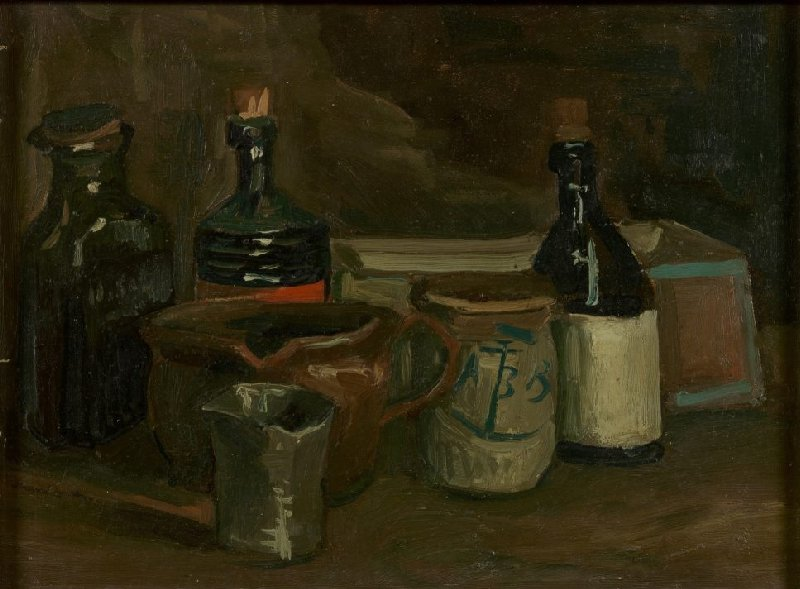
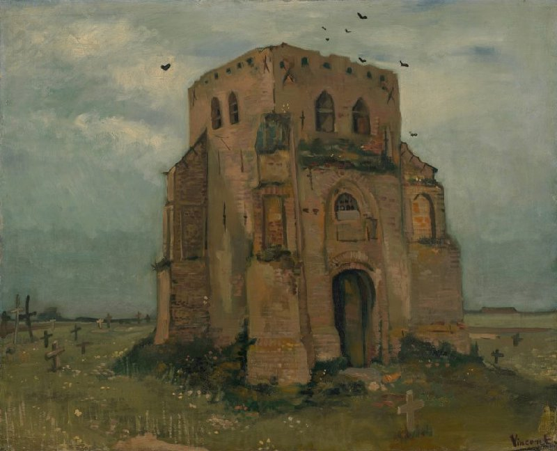
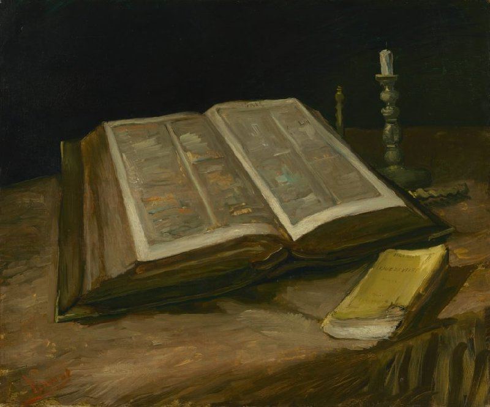
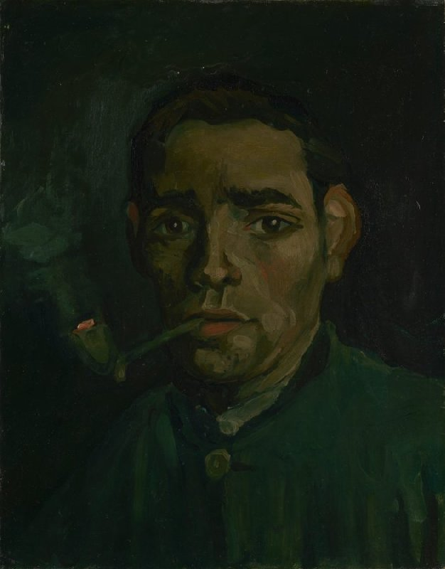
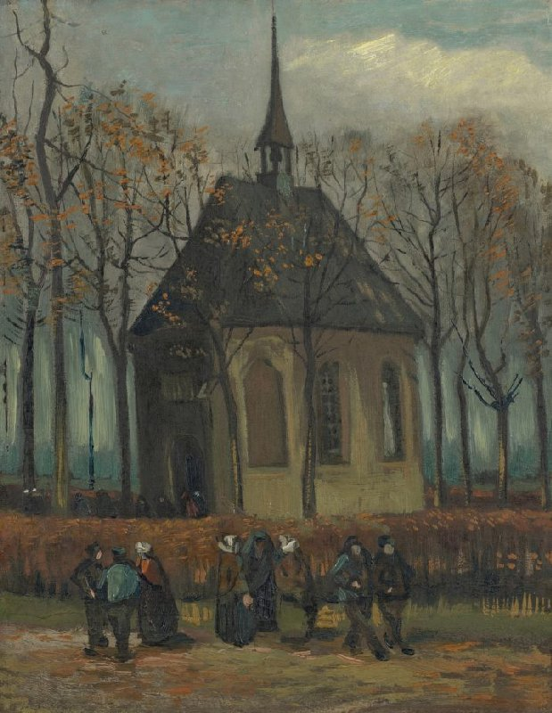
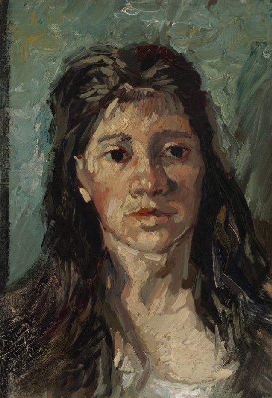
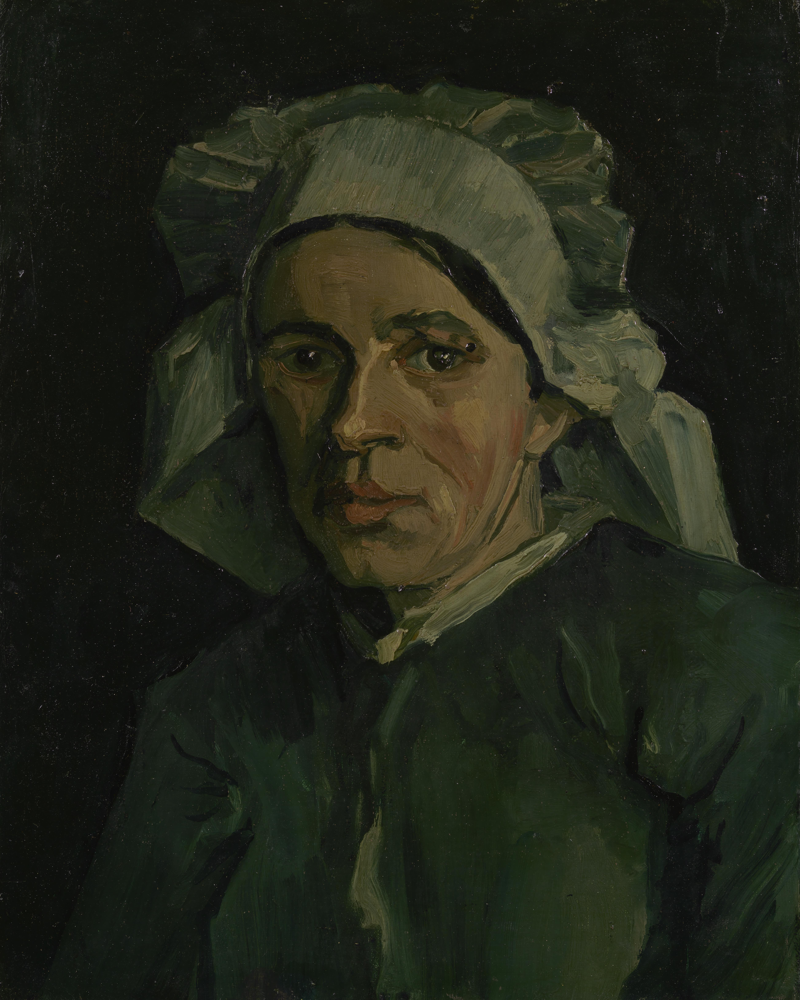

Still Life with Bottles and Earthenware - oil on canvas 1884-1885- at van Gogh Museum, Amsterdam.
His work at
Nuenen-Antwerp


The Potato Eaters - oil on canvas, April 1885- The van Gogh Museum- it's the only group portrait he ever made, but there is other previous versions of this paintings, that van Gogh made as practice. Despite how proud he was about this pating, he received critics because the colours were so dark.

The Old Church Tower at Nuenen - oil on canvas, 1885 - at The van Gogh Museum, Amsterdam. This church was protagonist of a lot of pieces of this period.

Still life with Bible- oil on canvas, October 1885 - at The van Gogh MUseum, Amsterdam. This Bible was from van Gogh's father, it was painted after his death. Theo told Vincent that his paintings were to dark, and encouraged him to use brighter tones.

Head of a Man- oil on canvas, 1885 - at The van Gogh Museum, Amsterdam.

Head of a Skeleton with a Burning Cigarette- oil on canvas- At The van Gogh Museum, Amsterdam. Van Gogh did this painting while studying at the Art Academy in Antwerp.

Congregation Leaving the Reformed Church in Nuenen- oil on canvas, 1884- At The van Gogh Museum, Amsterdam. During his stay in Antwerp he lloked for models to paint, particularly interestewd in working class people.

Head of a Woman- oil on canvas, 1885- At the van Gogh Museum, Amsterdam. This is one of the numeorus paintings of heads to study the human shape.

Head of a Woman- oil on canvas, 1884- At The van Gogh Museum, Amsterdam.
.